Manuel d'utilisation de la plateforme pédagogique I‑AMU. Prise en main complète, pas à pas, pour tous les profils : étudiants, enseignants, chercheurs et administrateurs.
2.1 Créer son compte · 2.2 Vérifier son e‑mail · 2.3 Lieu & département · 2.4 Consentement · 2.5 Connexion · 2.6 Réglages du profil · 2.7 Statistiques personnelles
3. Rôle — Étudiant
3.1 Discuter avec l'IA · 3.2 Rejoindre une session · 3.3 Importer un document · 3.4 Limites · 3.5 Historique & feedback
À propos des captures d'écran
Les illustrations (figures 1 à 17) sont chargées depuis le sous‑dossier captures/ placé à côté de ce document. Si une image n'apparaît pas, vérifiez que le fichier correspondant existe dans captures/ avec le nom attendu (ex. 01-inscription.png).
1. Présentation de la plateforme
I‑AMU donne aux étudiants un accès supervisé à un modèle d'intelligence artificielle, dans un cadre pédagogique maîtrisé par les enseignants.
Concrètement, I‑AMU est une application web qui se présente comme une interface de discussion (un « chat ») avec un modèle d'IA. Contrairement à un assistant grand public, l'usage est encadré : l'enseignant choisit le modèle, fixe des règles (consignes, nombre de jetons / « tokens » disponibles, documents autorisés) et peut consulter les échanges pour analyser la façon dont les étudiants utilisent l'IA.
Ce que permet I‑AMU
Pour l'étudiant : dialoguer avec une IA qui peut connaître le contexte d'une matière, dans un environnement balisé et équitable.
Pour l'enseignant : créer des matières (« ressources ») et des sessions (TD, TP, examen, étude libre), encadrer le comportement de l'IA et observer les usages.
Pour le chercheur : exporter des échanges à des fins de recherche, après autorisation.
Pour les administrateurs : gérer les comptes, les rôles, les modèles et la configuration de l'établissement.
Les profils (rôles)
Rôle
Pour qui
En deux mots
Étudiant
Adresse @etu.univ-amu.fr
Utilise l'IA, rejoint des sessions de cours.
Enseignant
Adresse @univ-amu.fr
Crée ressources et sessions, suit les échanges.
Enseignant habilité
Enseignant validé par l'admin
Peut importer des modèles personnalisés.
Chercheur
Rattaché à un laboratoire
Exporte des données pour la recherche.
Admin de département
Sur invitation
Gère comptes, habilitations et modèles du département.
Un seul rôle à la fois Chaque compte possède un rôle unique et exclusif. Un utilisateur appartient au plus à un département (sauf le chercheur et le super‑administrateur).
2. Premiers pas (commun à tous)
2.1 Créer son compte
Votre rôle est déterminé automatiquement par le domaine de votre adresse e‑mail :
Domaine de l'e‑mail
Rôle attribué
@etu.univ-amu.fr
Étudiant (automatique)
@univ-amu.fr
Enseignant (automatique)
Autre domaine reconnu
Selon configuration (ex. chercheur)
Domaine non reconnu
Inscription refusée : seuls les domaines configurés par l'établissement sont acceptés
Ouvrez la page d'inscription puis renseignez vos prénom et nom.
Saisissez votre adresse e‑mail universitaire.
Choisissez un mot de passe (au moins 12 caractères, 1 majuscule, 1 chiffre, 1 caractère spécial) et confirmez‑le.
Sélectionnez votre lieu, puis votre département (la liste se remplit après le choix du lieu).
Cochez le consentement au traitement des données, puis validez : un e‑mail de vérification vous est envoyé.
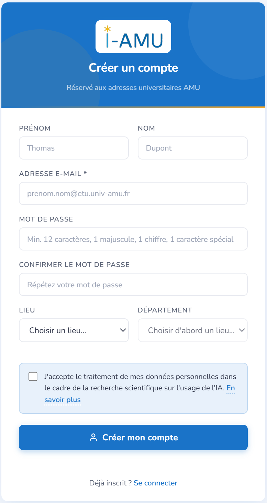
Figure 1 — Écran « Créer un compte » : prénom, nom, adresse universitaire, mot de passe, lieu et département, puis consentement.
2.2 Vérifier son adresse e‑mail
Cliquez sur le lien reçu par e‑mail pour activer votre compte. Tant que l'adresse n'est pas vérifiée, la connexion est refusée : le compte n'est pas utilisable.
Conseil Si vous ne recevez rien, vérifiez vos spams. Le lien de vérification est à usage unique.
2.3 Choisir son lieu et son département
Lors de l'inscription, vous sélectionnez d'abord un lieu (site), puis le département correspondant : la liste des départements ne se remplit qu'après le choix du lieu. Ce rattachement vous relie à votre composante (UFR, département…).
À noter Les chercheurs ne sont pas rattachés à un département : ils demandent une autorisation d'accès (voir §6).
2.4 Donner son consentement
L'inscription exige d'accepter le traitement de vos données : cochez la case de consentement avant de créer votre compte. La date et la version du texte accepté sont conservées. Vous pourrez ensuite, depuis votre profil, vous opposer à l'usage de vos données pour la recherche, ce qui vous exclut des analyses et des exports (voir §9).
2.5 Se connecter
Ouvrez la page de connexion.
Saisissez e‑mail et mot de passe.
Vous arrivez sur votre espace (l'interface de chat pour les étudiants).
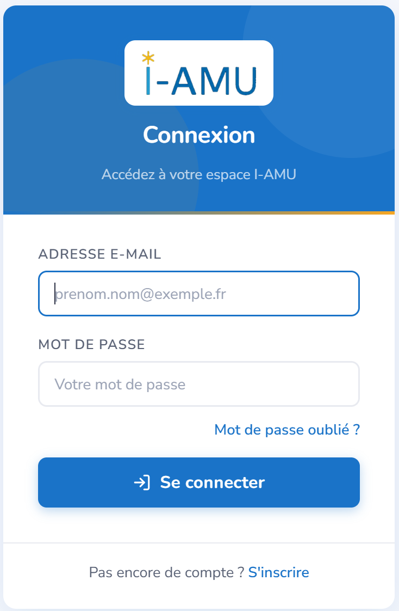
Figure 2 — Écran de connexion : adresse e‑mail et mot de passe, avec le lien « S'inscrire ».
2.6 Réglages du profil
Thème de l'interface : clair, sombre ou automatique.
Identité : vos nom et prénom (et, pour un enseignant, son titre).
Mot de passe : le changer quand vous le souhaitez.
Retrait du consentement à la recherche et désactivation du compte (zone à risque).
À noter Le lieu et le département sont fixés à l'inscription : ils ne se changent pas depuis le profil.
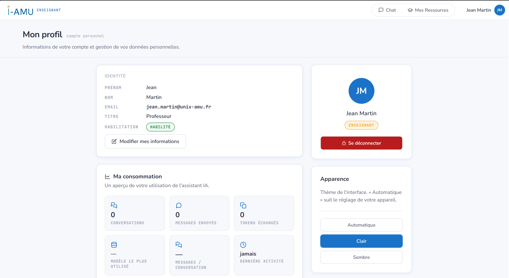
Figure 3 — Page « Mon profil » : identité, choix du thème, tableau « Ma consommation » et empreinte écologique, zone à risque.
2.7 Vos statistiques personnelles
Les étudiants et les enseignants disposent, dans « Mon profil », d'un tableau « Ma consommation » qui récapitule leur propre usage de l'assistant :
nombre de conversations et de messages envoyés ;
jetons (tokens) échangés et modèle le plus utilisé ;
moyenne de messages par conversation et dernière activité ;
un graphique d'activité sur les 30 derniers jours.
Un encadré « Empreinte écologique » estime en plus l'énergie et le CO₂ associés à vos échanges, avec des équivalents concrets (km en voiture, recharges de téléphone…) et des conseils pour la réduire.
À noter Ces statistiques sont personnelles : chacun ne voit que les siennes, et l'empreinte affichée est une estimation indicative, pas une mesure.
3. Rôle — Étudiant
Profil Étudiant
Vous dialoguez avec l'IA, librement ou dans le cadre d'une session de cours encadrée par un enseignant.
3.1 Discuter avec l'IA
Depuis l'espace de chat, créez une nouvelle conversation.
Choisissez le modèle proposé (une conversation = un modèle).
Saisissez votre question dans la zone de message et envoyez.
La réponse s'affiche en texte formaté (titres, listes, blocs de code coloriés).
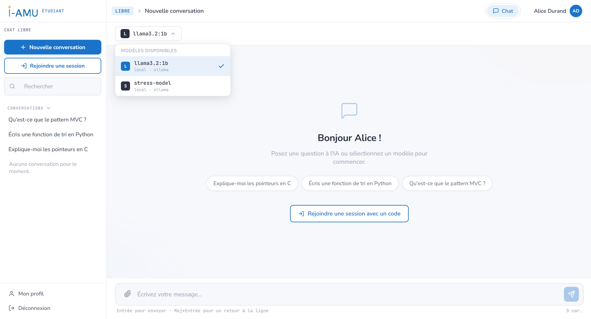
Figure 4 — Espace de chat : à gauche les conversations et les boutons « Nouvelle conversation » / « Rejoindre une session » ; au centre le fil et le sélecteur de modèle ; en bas la zone de saisie.
Conseil Formulez des demandes précises et donnez du contexte. Une bonne question = une meilleure réponse.
3.2 Rejoindre une session
Un enseignant peut ouvrir une session (TD, TP, examen, étude libre) protégée par un code d'accès à 6 caractères.
Cliquez sur « Rejoindre une session ».
Saisissez le code à 6 caractères (ex. 4F7K2B).
Vous êtes inscrit : la session impose son cadre (modèles, consignes, limites).
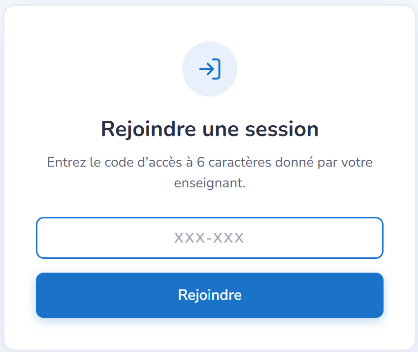
Figure 5 — Fenêtre « Rejoindre une session » avec le champ du code à 6 caractères.
3.3 Importer un document
Vous pouvez joindre un fichier (icône trombone de la zone de saisie) pour que l'IA en tienne compte. Formats acceptés : PDF, Markdown (.md), texte (.txt), jusqu'à 10 Mo et 10 documents par conversation.
En chat libre (hors session), l'import est disponible par défaut avec ces trois formats. En session, c'est l'enseignant qui décide : il peut restreindre les formats, abaisser la taille maximale, voire désactiver l'import.
Attention Dans une session de type Examen, l'import de documents est toujours désactivé.
3.4 Comprendre les limites
Limite
Signification
Jetons (tokens) max
Volume maximal traité par échange — au‑delà, raccourcissez votre message.
Taille d'entrée max
Longueur maximale d'un message.
Fenêtre de contexte
Mémoire du modèle sur la conversation en cours.
3.5 Historique & retour (feedback)
Vos conversations sont conservées et accessibles depuis la liste de gauche. Sur chaque réponse, vous pouvez indiquer si elle vous a été utile ou non (pouce haut / pouce bas).
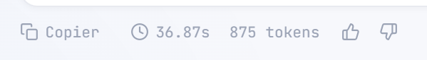
Figure 6 — Les boutons de retour (pouce haut / pouce bas) sous une réponse de l'IA.
4. Rôle — Enseignant
Profil Enseignant
Vous structurez l'usage de l'IA : vous créez des matières, ouvrez des sessions encadrées et analysez les échanges.
4.1 Gérer ses ressources (matières)
Une ressource représente une matière : code, intitulé, description, semestre. Elle passe par trois états : Brouillon, Publiée, Archivée.
Ouvrez « Mes ressources » puis « Nouvelle ressource ».
Renseignez code, nom, description, semestre.
Ajoutez d'éventuels co‑enseignants.
Publiez la ressource quand elle est prête.
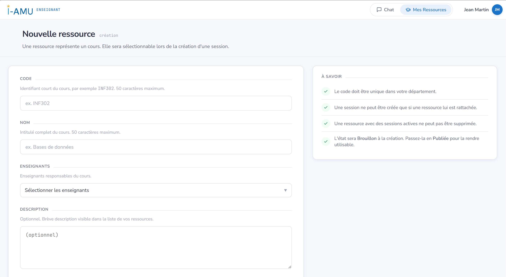
Figure 7 — Création d'une ressource : code, intitulé, enseignants, description et semestre. Le panneau « À savoir » rappelle les règles (code unique, état Brouillon à la création…).
4.2 Créer et piloter une session
Une session est un cadre d'usage rattaché à une ressource. Choisissez son type :
Type
Usage typique
Examen
Évaluation : cadre strict, traçabilité renforcée.
TD
Travaux dirigés accompagnés.
TP
Travaux pratiques.
Étude libre
Révision autonome encadrée.
Cycle de vie d'une session : Brouillon → Programmée → Active → Terminée (ou Annulée).
Depuis une ressource, cliquez « Nouvelle session » et choisissez le type.
Définissez les dates de début et de fin.
Associez le ou les modèles autorisés.
Réglez les limites et consignes (§4.4).
Passez la session en « Programmée » ou « Active » pour générer le code d'accès.
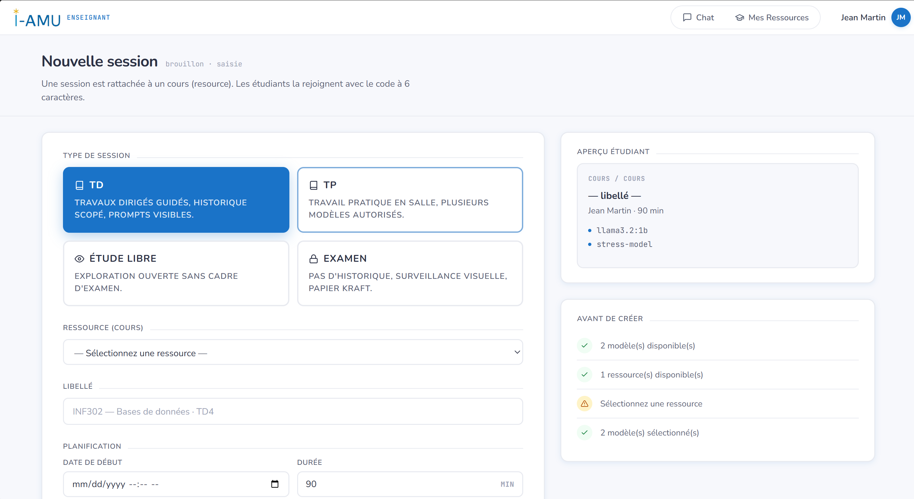
Figure 8 — Paramétrage d'une session : choix du type (TD, TP, Étude libre, Examen), ressource, planification, modèles autorisés et pré‑prompt. Le panneau de droite montre l'aperçu côté étudiant.
4.3 Le code d'accès
Important Le code à 6 caractères est généré automatiquement lorsque la session passe en « Programmée » ou « Active ». Tant qu'elle est en brouillon, aucun code n'existe. Communiquez ce code aux étudiants au début de la séance.
4.4 Encadrer le comportement de l'IA
Consignes : instructions visibles données aux étudiants.
Pré‑prompt / post‑prompt : texte ajouté avant/après le message pour orienter l'IA (ton, périmètre, interdits).
Jetons (tokens) max et taille d'entrée : quotas par échange.
Documents : formats autorisés (PDF/MD/TXT) et taille maximale.
Conseil Pour un examen, utilisez le pré‑prompt pour interdire les réponses toutes faites et privilégier l'accompagnement méthodologique.
4.5 Suivre les échanges
Pour chaque session, consultez les conversations des étudiants : messages, réponses, retours (pouce haut/bas), latence et volume de jetons. Objectif : analyser comment les étudiants mobilisent l'IA.
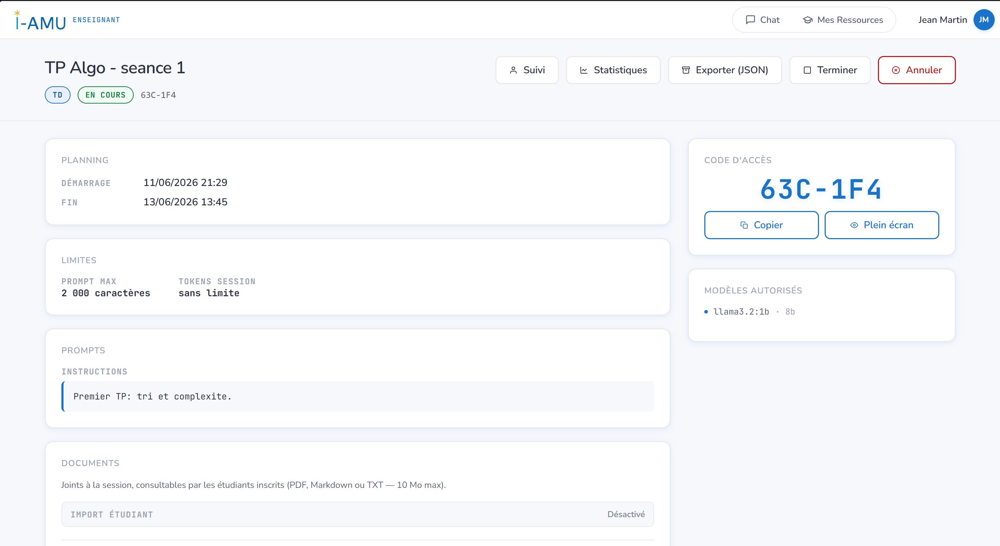
Figure 9 — Suivi d'une session : étudiants inscrits et leurs échanges, avec les indicateurs (nombre d'échanges, feedback, jetons).
Cadre d'usage Le suivi sert un objectif pédagogique. Restez dans le périmètre de vos enseignements et respectez la confidentialité des étudiants.
Demander l'habilitation
Pour importer vos propres modèles, demandez l'habilitation à l'administrateur de votre département (voir §5) : depuis votre espace, soumettez une demande motivée.
5. Rôle — Enseignant habilité
Profil Enseignant habilité
Enseignant validé par l'administrateur du département, autorisé à importer des modèles d'IA personnalisés.
L'habilitation est un statut accordé par l'administrateur de département. Une fois habilité, vous conservez toutes les capacités d'un enseignant, plus la gestion de modèles.
5.1 Obtenir l'habilitation
Depuis votre espace, ouvrez « Demander l'habilitation ».
L'administrateur approuve ou refuse ; vous êtes notifié de la décision.
5.2 Importer un modèle pour une ressource
Ouvrez la ressource concernée, onglet « Modèles ».
Ajoutez un modèle : nom, fournisseur, fenêtre de contexte, URL d'API, type d'adaptateur.
Enregistrez : le modèle devient disponible pour cette ressource.
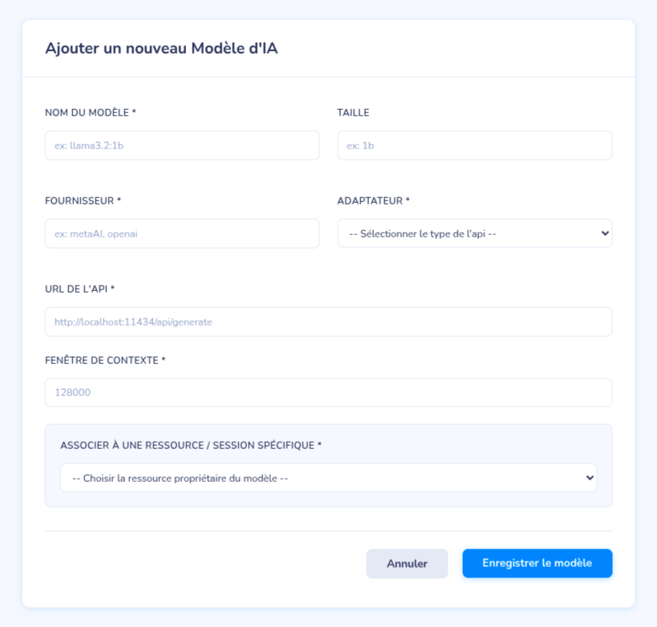
Figure 10 — Import d'un modèle sur une ressource : nom, fournisseur, fenêtre de contexte, URL d'API et type d'adaptateur.
5.3 Portée d'un modèle importé
Un modèle que vous importez est rattaché à une ressource précise. Les enseignants de cette ressource peuvent alors le choisir lors de la création d'une session, aux côtés des modèles mis à disposition au niveau du département.
Règle de portée Un modèle est rattaché soit à un département, soit à une ressource, jamais aux deux. Un modèle de ressource ne peut pas être marqué comme « partageable » globalement.
6. Rôle — Chercheur
Profil Chercheur
Rattaché à un laboratoire, vous demandez l'accès aux données d'un département et exportez des échanges pour vos travaux.
Le chercheur n'appartient à aucun département. Il est rattaché à un laboratoire (déterminé par le domaine de son adresse e‑mail), et son compte est approuvé par un super‑administrateur. L'accès aux données se demande ensuite département par département, et c'est l'administrateur du département visé qui l'accorde.
6.1 Demander l'accès à un département
Ouvrez « Demandes d'accès » puis sélectionnez le département visé.
Rédigez votre demande (objet de la recherche, données souhaitées).
L'administrateur du département autorise ou rejette.
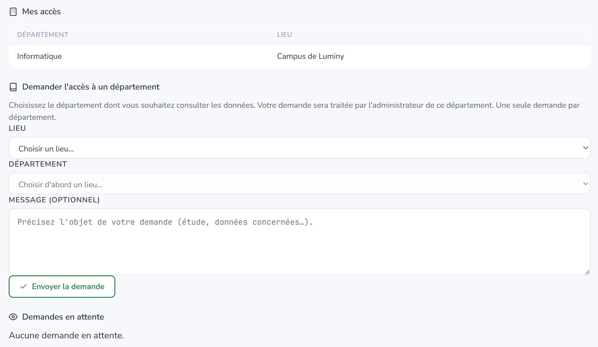
Figure 11 — Demande d'accès à un département : champ de motivation et statut (en attente / autorisée / rejetée).
6.2 Analyser les usages
Pour chaque département autorisé, un tableau d'analyse agrège les usages des étudiants — sans jamais révéler d'identité. On y trouve :
Volume : conversations (en session vs libres), échanges et nombre d'étudiants concernés ;
Consommation : jetons en entrée / sortie et latence moyenne ;
Satisfaction : part de retours positifs (pouces) ;
Activité : courbe sur les 30 derniers jours ;
Mots‑clés : termes les plus fréquents (un mot n'apparaît que s'il est employé par au moins deux étudiants distincts) ;
Forme des prompts : longueur moyenne des questions et profondeur moyenne des conversations.
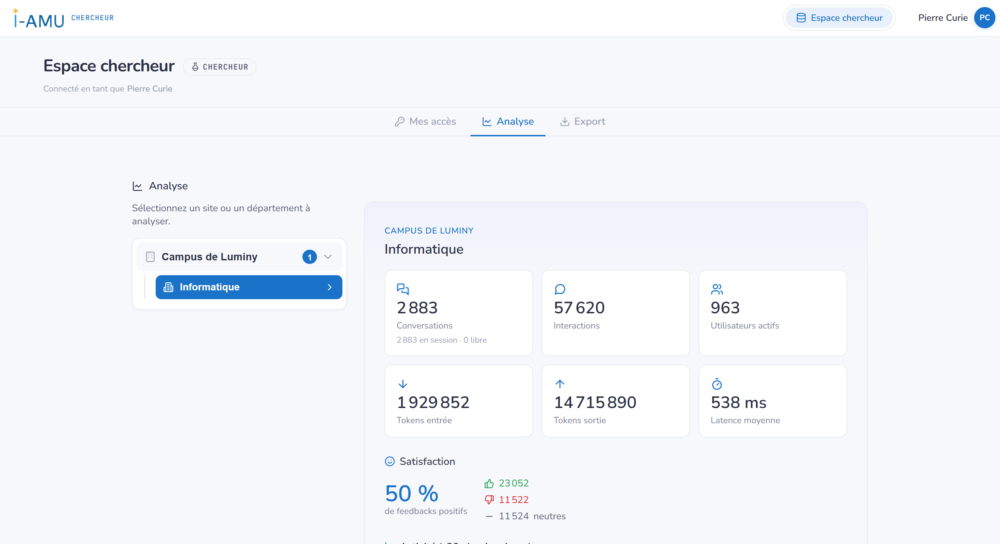
Figure 12 — Tableau d'analyse : cartes de volume / consommation / satisfaction, courbe d'activité et mots‑clés.
6.3 Exporter le corpus
Vous pouvez exporter les échanges des départements autorisés (JSON / CSV) pour vos analyses hors ligne. Chaque export est tracé (chercheur, date, adresse IP).
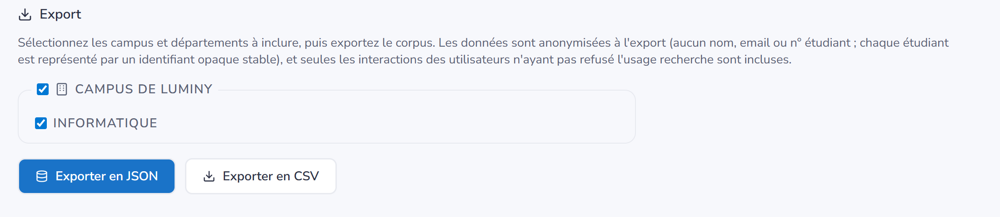
Figure 13 — Écran d'export : choix du périmètre (départements) et bouton d'export (JSON / CSV).
Données & recherche À l'export, l'identité est pseudonymisée : ni nom, ni e‑mail, ni numéro étudiant ne quittent la plateforme ; chaque étudiant reçoit un jeton opaque stable (même étudiant = même jeton). Les étudiants ayant refusé l'usage recherche sont automatiquement exclus des analyses et des exports.
7. Rôle — Administrateur de département
Profil Administrateur de département
Vous administrez votre département : comptes, habilitations enseignants, autorisations chercheurs et modèles.
Le compte est créé sur invitation d'un super‑administrateur. Votre périmètre est limité à votre département.
7.1 Gérer les utilisateurs
Consulter la liste des membres du département (étudiants, enseignants).
Activer ou désactiver un compte.
À noter Le rôle découle du domaine e‑mail à l'inscription : l'administrateur ne réattribue pas les rôles, il gère l'accès des comptes.
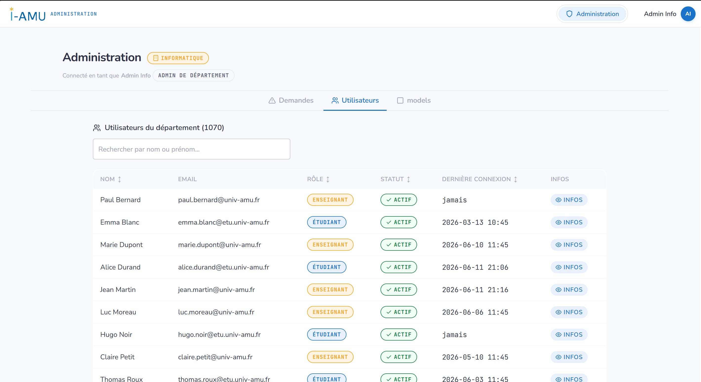
Figure 14 — Liste des membres du département avec leur rôle, leur statut (actif/inactif) et les actions.
7.2 Traiter les demandes d'habilitation
Approuvez ou refusez les demandes des enseignants souhaitant importer des modèles (voir §5).
7.3 Autoriser les chercheurs
Examinez les demandes d'accès des chercheurs à votre département : autoriser ou rejeter (voir §6).
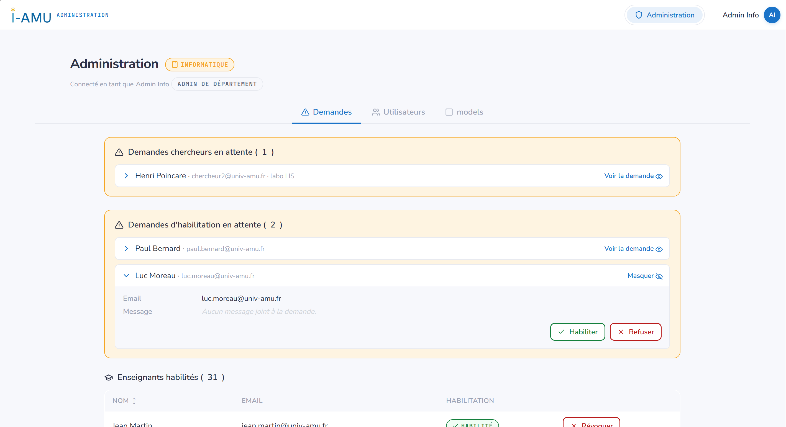
Figure 15 — Demandes en attente (habilitation enseignant / accès chercheur) avec les boutons Approuver / Rejeter.
7.4 Gérer les modèles en accès libre
Définissez quels modèles sont utilisables hors session (mode libre) par les membres du département.
À noter Les actions sensibles sont tracées. Tenez à jour les accès pour garder un périmètre cohérent.
8. Rôle — Super‑administrateur
Profil Super‑administrateur
Niveau le plus élevé : vous configurez l'établissement (sites, départements, domaines e‑mail) et créez les administrateurs.
Compte à privilèges Les comptes super‑administrateurs sont en nombre limité, isolés du reste des comptes, et toutes leurs actions sont tracées. Le premier compte est créé par un script d'initialisation unique.
Première connexion Le tout premier super‑administrateur est initialisé avec un mot de passe provisoire : il doit le changer dès sa première connexion.
8.1 Gérer les sites et l'identité visuelle
Créez et configurez les sites (établissements) : nom, adresse, et personnalisation visuelle (logo, favicon, couleur principale).
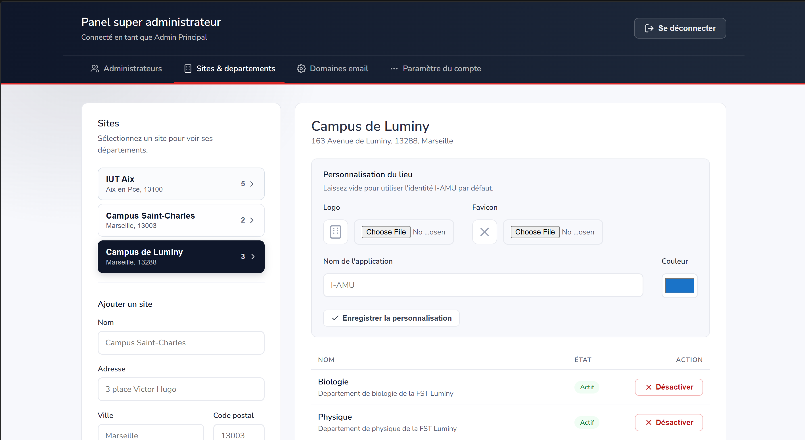
Figure 16 — Configuration d'un site : nom, adresse, téléversement du logo / favicon et couleur principale.
8.2 Gérer départements et laboratoires
Créez les départements (rattachés à un site) et les laboratoires utilisés pour les chercheurs.
8.3 Configurer les domaines e‑mail
Définissez la correspondance domaine → rôle automatique (ex. @etu.univ-amu.fr → Étudiant). Ces règles ne sont jamais codées en dur : elles se gèrent ici.
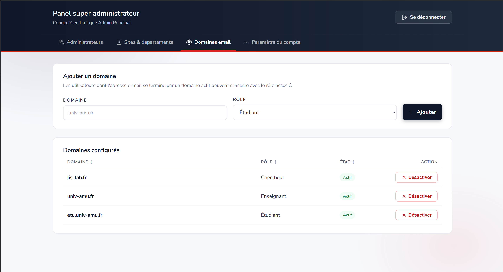
Figure 17 — Domaines e‑mail configurés, avec le rôle associé (domaine → rôle) et l'état actif/inactif.
8.4 Créer les administrateurs et valider les chercheurs
Admins de département : créés par invitation e‑mail uniquement.
Comptes chercheurs : validés à ce niveau avant qu'ils ne demandent l'accès à un département.
9. Données personnelles & confidentialité
I‑AMU traite des données pédagogiques (conversations, retours, métriques d'usage). Voici l'essentiel à connaître :
Sujet
Ce qu'il faut savoir
Consentement
Recueilli à la première connexion ; version et date enregistrées.
Conservation
Vos conversations sont conservées pour vous permettre d'y revenir ; pour leur suppression, contactez le DPO.
Droit d'opposition
Depuis « Mon profil », vous pouvez retirer votre consentement à l'usage recherche (traitement jusqu'à 30 jours).
Usage recherche
Données pseudonymisées à l'export ; les personnes ayant refusé la recherche sont exclues ; chaque export est tracé (qui, quand, IP).
IA locale
Le modèle est hébergé localement : vos échanges ne sont pas envoyés à un service tiers grand public.
Exercer vos droits Le retrait du consentement à la recherche et la désactivation du compte se font depuis « Mon profil ». Pour l'accès, la rectification ou la suppression de vos données, contactez le DPO : dpo@univ-amu.fr.
10. FAQ & résolution de problèmes
Je n'arrive pas à me connecter
Le plus souvent, l'adresse e‑mail n'a pas encore été vérifiée : tant que le lien reçu à l'inscription n'a pas été cliqué, la connexion est refusée. Vérifiez aussi que le compte n'a pas été désactivé.
Mon adresse e‑mail est refusée à l'inscription
Le rôle est attribué automatiquement d'après le domaine de l'adresse. Seuls les domaines configurés par l'établissement (étudiant, enseignant, ou laboratoire pour les chercheurs) sont acceptés ; avec un autre domaine, la création de compte est refusée. Rapprochez‑vous de l'administration.
Le code de session ne fonctionne pas
Le code fait 6 caractères (lettres majuscules et chiffres). Vérifiez qu'il n'y a pas de confusion (O/0, I/1) et que la session est bien programmée ou active.
Je ne peux pas importer de document
L'import dépend de la session : l'enseignant doit avoir autorisé au moins un format (PDF/MD/TXT). Vérifiez aussi la taille (max 10 Mo).
L'IA refuse mon message ou le tronque
Vous dépassez probablement la limite de jetons ou la taille d'entrée fixée par l'enseignant. Raccourcissez votre message ou découpez‑le.
Je suis enseignant et je veux mon propre modèle
Demandez l'habilitation à l'administrateur de votre département (§5).
Je suis chercheur et je ne vois pas de données
Votre demande d'accès au département doit d'abord être autorisée par son administrateur (§6).
11. Glossaire
Terme
Définition
Modèle (LLM)
Le moteur d'IA avec lequel on discute. Une conversation utilise un seul modèle.
Ressource
Une matière gérée par un enseignant (code, intitulé, semestre).
Session
Cadre d'usage rattaché à une ressource (TD, TP, examen, étude libre), protégé par un code.
Code d'accès
Clé à 6 caractères permettant à un étudiant de rejoindre une session.
Conversation
Un fil de discussion entre un utilisateur et un modèle.
Interaction
Un échange : un message envoyé et la réponse associée.
Jeton (token)
Unité de découpage du texte par l'IA ; sert à mesurer et limiter les échanges.
Fenêtre de contexte
Quantité de texte que le modèle peut « garder en tête ».
Pré‑prompt / post‑prompt
Texte ajouté automatiquement avant/après le message pour orienter l'IA.
Habilitation
Statut accordé à un enseignant l'autorisant à importer des modèles.
Département
Composante de rattachement d'un utilisateur, rejointe via un code.
Laboratoire
Structure de rattachement d'un chercheur.
Archivage
Mise de côté automatique des conversations après une durée réglée.
I‑AMU — Guide utilisateur · Version 1.0 · Document destiné aux utilisateurs de la plateforme. Remplacez les emplacements de captures par les copies d'écran réelles avant diffusion.